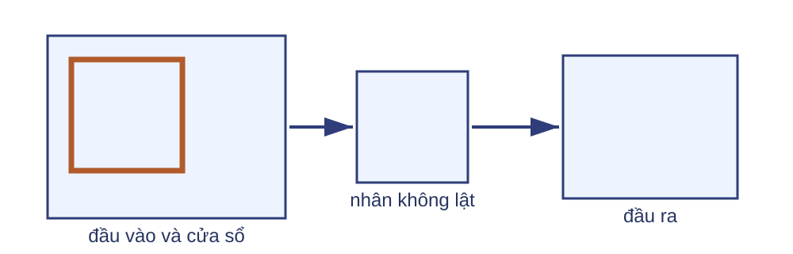
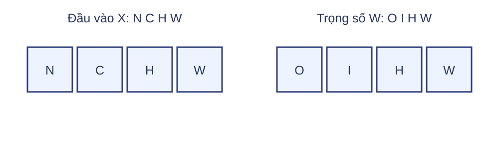
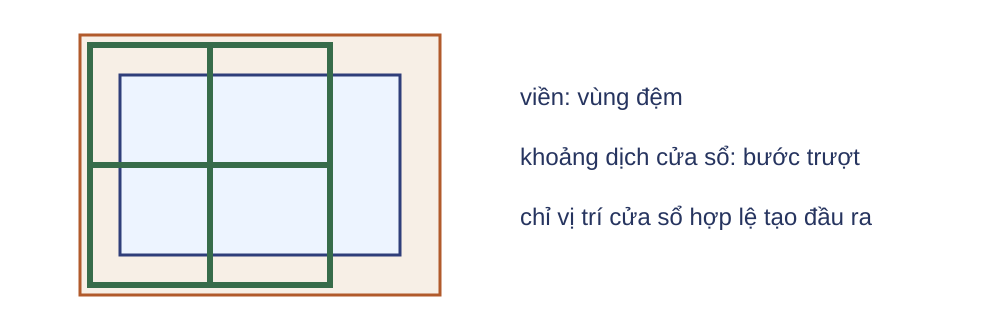
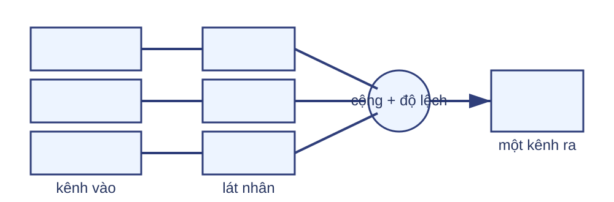
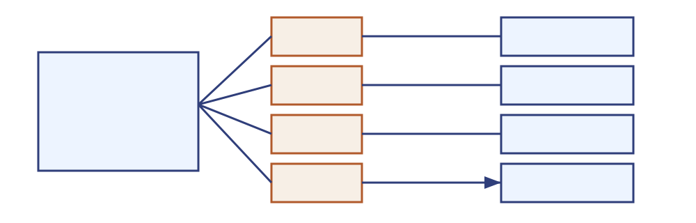
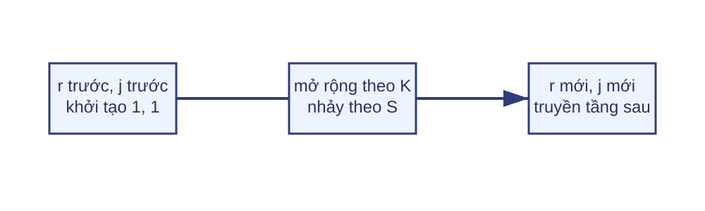
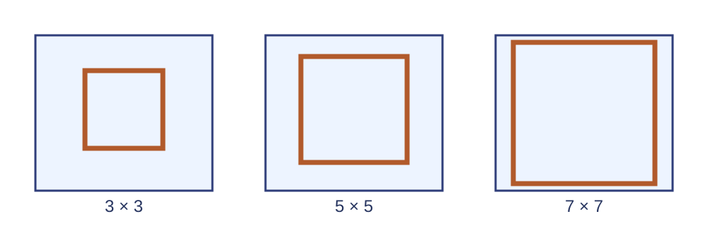
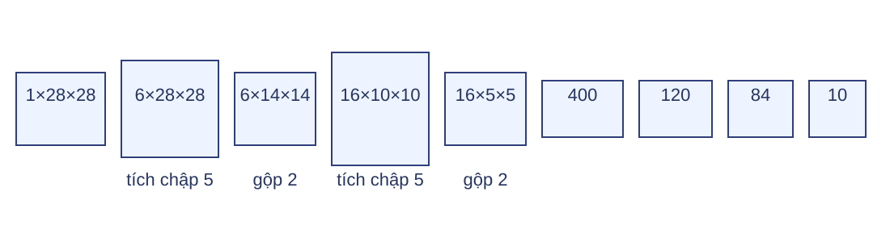

Mỗi vị trí đầu ra là tích vô hướng trên một cửa sổ

Thư viện dùng tương quan chéo
Tương quan chéo
$$Y_{i,j}=\sum_{u,v}X_{i+u,j+v}K_{u,v}.$$
Giữ nguyên hướng nhân.
Tích chập toán học
Lật nhân theo hai trục trước khi trượt.
Trong học sâu, tên lớp vẫn thường dùng thuật ngữ chuẩn convolution.
Khóa dữ kiện trước khi trượt cửa sổ
$$X=\begin{bmatrix}0&1&2\\3&4&5\\6&7&8\end{bmatrix}$$
$$K=\begin{bmatrix}0&1\\2&3\end{bmatrix}$$
Không đệm, bước trượt 1, độ lệch $b=0$: đầu ra có kích thước $2\times2$.
Ô đầu tiên cộng bốn tích
$$Y_{0,0}=0\cdot0+1\cdot1+3\cdot2+4\cdot3=19.$$
Dịch cửa sổ sang phải một cột thay $[[0,1],[3,4]]$ bằng $[[1,2],[4,5]]$.
Bốn vị trí tạo ma trận đầu ra
$$Y=\begin{bmatrix}19&25\\37&43\end{bmatrix}.$$
| Vị trí | Cửa sổ | Kết quả |
|---|
| $(0,1)$ | $[[1,2],[4,5]]$ | 25 |
| $(1,0)$ | $[[3,4],[6,7]]$ | 37 |
| $(1,1)$ | $[[4,5],[7,8]]$ | 43 |
Công thức gom cùng phép tính ở mọi vị trí
$$Y_{i,j}=b+\sum_{u=0}^{K_h-1}\sum_{v=0}^{K_w-1}X_{i+u,j+v}K_{u,v}.$$
$i,j$: vị trí đầu ra
$u,v$: vị trí trong nhân
$b$: dùng chung theo không gian
Trượt cửa sổ thay dữ liệu, không thay tham số
Câu hỏi: Từ $Y_{0,0}$ sang $Y_{0,1}$, bốn phần tử đầu vào nào được dùng và nhân có đổi không?
Cửa sổ mới là $[[1,2],[4,5]]$; nhân vẫn là $[[0,1],[2,3]]$.
Quy ước phép toán phải đi cùng kết quả
Không lật
Tương quan chéo; kết quả ví dụ bắt đầu bằng 19.
Có lật
Tích chập toán học; là phép toán khác với cùng ma trận $K$.
Câu hỏi: Khi đọc API Conv2d, cần kiểm tra điều gì trước khi đối chiếu phép tính tay?
Khóa thứ tự trục trước khi tính kích thước

$$X:N\times C_{in}\times H_{in}\times W_{in},\quad W:C_{out}\times C_{in}\times K_h\times K_w.$$
$K_h,K_w$ là kích thước nhân; $W$ là toàn bộ tensor trọng số gồm mọi lát nhân.
Vùng đệm cho phép cửa sổ chạm biên

Đệm trên/dưới/trái/phải có thể khác nhau: $(P_t,P_b,P_l,P_r)$.
Bước trượt chọn các vị trí cửa sổ
$S=1$
Dịch một ô; lấy mọi vị trí hợp lệ.
$S>1$
Bỏ qua vị trí trung gian; thường giảm kích thước không gian.
$S_h,S_w\in\mathbb{Z}_{>0}$; bước trượt thay số vị trí đầu ra và MAC, không thay số tham số.
Kích thước đầu ra đếm vị trí cửa sổ hợp lệ
$$H_{out}=\left\lfloor\frac{H_{in}+P_t+P_b-K_h}{S_h}\right\rfloor+1,$$
$$W_{out}=\left\lfloor\frac{W_{in}+P_l+P_r-K_w}{S_w}\right\rfloor+1.$$
Với $S_h,S_w\in\mathbb{Z}_{>0}$, phần dư bị bỏ; không tạo cửa sổ một phần ở cuối.
Một ví dụ kích thước theo NCHW
$$X:2\times3\times6\times7,\quad C_{out}=4,\quad K_h=K_w=3,$$
$$P_t=P_b=P_l=P_r=1,\qquad S_h=S_w=2.$$
$$H_{out}=\left\lfloor\frac{6+1+1-3}{2}\right\rfloor+1=3$$
$$W_{out}=\left\lfloor\frac{7+1+1-3}{2}\right\rfloor+1=4$$
$$Y:2\times4\times3\times4.$$
Đệm giữ nguyên kích thước khi bước trượt bằng một
$$S_h=S_w=1,\qquad P_t+P_b=K_h-1,\quad P_l+P_r=K_w-1.$$
Nhân lẻ
Có thể chia đệm đối xứng.
Nhân chẵn
Tổng đệm lẻ nên hai phía phải bất đối xứng.
Kiểm tra tính hợp lệ trước khi nhân
Câu hỏi: Nếu $H_{in}+P_t+P_b\lt K_h$, tầng có tạo được hàng đầu ra nào không?
Không. Cửa sổ không thể nằm trọn trong đầu vào đã đệm.
Một kênh đầu ra phải gom mọi kênh vào

$$\widetilde X_{n,c,p,q}=\begin{cases}X_{n,c,p-P_t,q-P_l},&0\le p-P_t\lt H_{in},\ 0\le q-P_l\lt W_{in},\\0,&\text{ngoài miền},\end{cases}$$
$$Y_{n,o,i,j}=b_o+\sum_{c,u,v}\widetilde X_{n,c,iS_h+u,jS_w+v}W_{o,c,u,v}.$$
Ví dụ hai kênh khóa đủ dữ kiện
$$X_{0,0,:,:}=\begin{bmatrix}1&2&3\\4&5&6\\7&8&9\end{bmatrix}$$
$$W_{0,0,:,:}=\begin{bmatrix}1&2\\3&4\end{bmatrix}$$
$$X_{0,1,:,:}=\begin{bmatrix}0&1&2\\3&4&5\\6&7&8\end{bmatrix}$$
$$W_{0,1,:,:}=\begin{bmatrix}0&1\\2&3\end{bmatrix}$$
$$P_t=P_b=P_l=P_r=0,\qquad S_h=S_w=1,\qquad b_0=0.$$
$$Y_{0,0,0,0}= (1\cdot1+2\cdot2+4\cdot3+5\cdot4)+(0\cdot0+1\cdot1+3\cdot2+4\cdot3)=56.$$
Cùng hai lát nhân tạo đủ đầu ra
Câu hỏi: Trượt hai cửa sổ đồng bộ; lát $Y_{0,0,:,:}$ là gì và mỗi ô cộng bao nhiêu tích?
$$Y_{0,0,:,:}=\begin{bmatrix}56&72\\104&120\end{bmatrix}.$$
Mỗi ô cộng tám tích: $C_{in}K_hK_w=2\cdot2\cdot2$.
Mỗi kênh ra có một bộ lọc riêng

Một bộ lọc là lát $W_{o,:,:,:}$ có kích thước $C_{in}\times K_h\times K_w$; toàn tầng có $C_{out}$ bộ lọc.
Số tham số không phụ thuộc kích thước ảnh
$$P=C_{out}(C_{in}K_hK_w+1).$$
$$4(3\cdot3\cdot3+1)=112.$$
Hạng $+1$ là độ lệch của mỗi kênh ra.
MAC tăng theo số vị trí đầu ra
$$\operatorname{MAC}_{sample}=H_{out}W_{out}C_{out}C_{in}K_hK_w.$$
Mỗi mẫu: $3\cdot4\cdot4\cdot3\cdot3\cdot3=1296$ MAC.
Lô 2 mẫu: $2\cdot1296=2592$ MAC.
Không đổi MAC thành phép toán dấu phẩy động (FLOPs) khi chưa nêu quy ước đếm.
Trường tiếp nhận nối đơn vị sâu với tầng tham chiếu
Trường tiếp nhận của một đơn vị là vùng trên đầu vào, hoặc trên tầng được chọn làm tham chiếu, có thể ảnh hưởng đến đơn vị đó.
$r_l$: kích thước vùng đo trên tầng tham chiếu.
$j_l$: khoảng cách trên cùng tầng đó giữa hai đơn vị kề nhau ở tầng $l$.
Theo dõi vùng và khoảng nhảy qua từng tầng

$r_0=1$: một điểm ở tầng tham chiếu.
$j_0=1$: hai điểm kề nhau cách một vị trí.
Ba tầng dùng nhân 3×3 cho trường tiếp nhận 7×7

$$(r_1,r_2,r_3)=(3,5,7),\qquad (j_1,j_2,j_3)=(1,1,1).$$
Truy hồi giải thích tác động của bước trượt
$$r_l=r_{l-1}+(K_l-1)j_{l-1},\qquad j_l=j_{l-1}S_l.$$
$$(K_1,S_1)=(3,2),\quad(K_2,S_2)=(3,1).$$
| Tầng | $r_l$ | $j_l$ |
|---|
| 1 | $1+2\cdot1=3$ | 2 |
| 2 | $3+2\cdot2=7$ | 2 |
Câu hỏi: Vì sao tầng hai thêm 4 thay vì 2?
Nhân sai phân phản hồi với cạnh
$$K_x=\begin{bmatrix}1&-1\end{bmatrix}$$
So sánh hai cột kề nhau.
$$K_y=\begin{bmatrix}1\\-1\end{bmatrix}$$
So sánh hai hàng kề nhau.
Phản hồi lớn biểu thị thay đổi cường độ theo hướng nhân; dấu phụ thuộc thứ tự sáng–tối.
Tích chập 1×1 trộn kênh tại cùng vị trí
$$Y_{n,o,i,j}=b_o+\sum_{c=0}^{C_{in}-1}W_{o,c,0,0}X_{n,c,i,j}.$$
Bước trượt 1, không đệm: không trộn vị trí lân cận.
Đổi $C_{in}$ thành $C_{out}$ tại mỗi điểm.
Gộp cực đại truyền đạo hàm về vị trí thắng
$$y=\max(x_1,\ldots,x_m).$$
Cực đại duy nhất: nhận toàn bộ đạo hàm thượng nguồn.
Vị trí khác: nhận 0.
Trường hợp hòa cần quy ước của toán tử.
Dấu vết kích thước qua một mạng tích chập nhỏ

Câu hỏi: Sau phép gộp thứ hai, vì sao $16\times5\times5$ được làm phẳng thành 400?
Vì $16\cdot5\cdot5=400$; kích thước lô không được gộp vào trục đặc trưng.
Huấn luyện học nhân từ mất mát cuối
Lan truyền xuôi
Ảnh → đặc trưng → logit → mất mát.
Lan truyền ngược
Tính gradient cho nhân, độ lệch và đầu mạng.
Cập nhật
SGD hoặc Adam đổi mọi tham số học được.